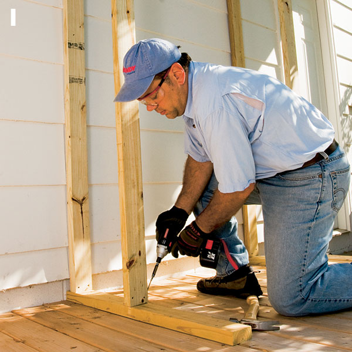
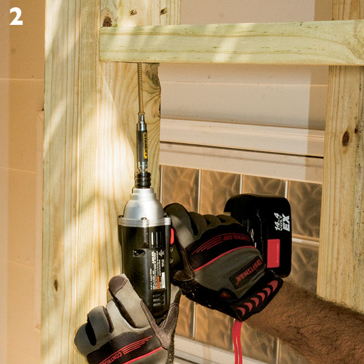
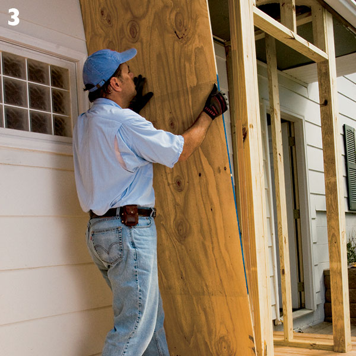
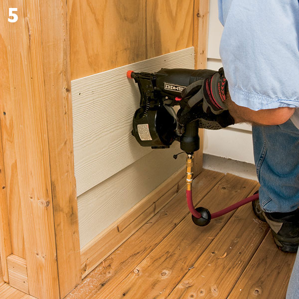
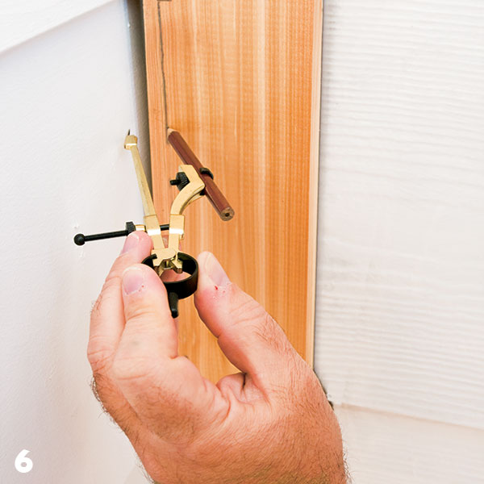
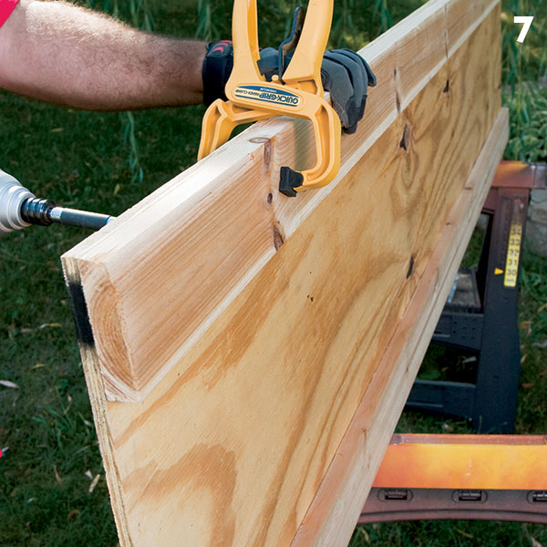
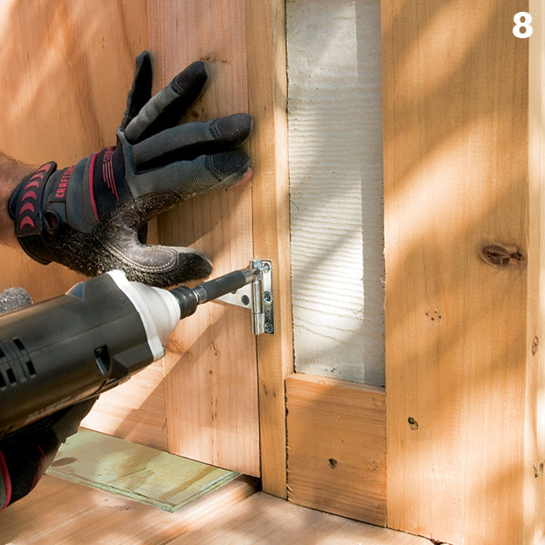
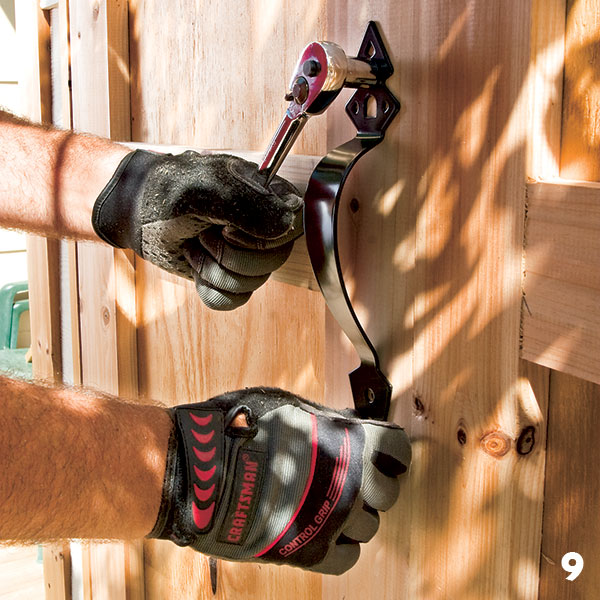

That’s why a garden storage locker comes in handy. Built under the overhanging eaves of your home, it creates an ideal space for long-handled tools as well as a great place to stack bags of soil amendments and mulch.
This easy-to-build structure utilizes simple framing techniques, and because of its relatively small size and the fact that it doesn’t need a roof, it goes together quickly. No special skills or tools are required — a pneumatic nailer will speed the process, but an old-fashioned hammer and nails work just as well.
Construction details
This locker can be built to almost any size you need. The main determining factor is where your home’s roof trusses fall in relation to where you want to build the locker, as you’ll need to attach the top plates of the locker’s side walls to the trusses.
Another advantage of the design is that the structure does not penetrate the house’s siding. This is beneficial because if your storage needs change, you can easily disassemble the locker without needing to repair the siding. Leaving the siding intact also eliminates the risk of any water infiltration into your home’s wall structure. And depending on local building codes, you may not need to file for a building permit as long as you don’t attach the locker directly to your home’s exterior walls. (Always check with local code authorities before beginning construction to learn what’s required in your area.)
You can build the locker on a number of surfaces. I covered an old existing raised bed with decking, but you could install paver stones to create a stable base, pour a small pad of concrete or even use treated 6x6 timbers buried flush with the grade as a surface on which to attach the walls’ sole plates. Just make sure to use the appropriate fasteners (nails, masonry screws, expansion bolts or landscape timber screws, depending on your flooring choice) to secure the sole plates.
Framing the sides
Begin construction by marking the location of the trusses above the soffits and then screw the side-wall top plates to their undersides. (Bear in mind that truss location will dictate the width of the locker.) In some situations, such as when aluminum or vinyl soffit panels have been installed directly below the trusses with no intervening sheathing, you’ll have direct access to the trusses once you’ve removed the soffit panels. In other cases, such as when plywood or hardboard has been used as a soffit material, you’ll need to use a stud finder to locate the trusses.
To determine the position of the side-wall sole plates, strike a plumb line from the outer edge of the top plates to the surface upon which you’re building the locker. Mark that position and use it as a register to properly locate the sole plates; then screw the sole plates to the surface. Cut the side-wall studs to the appropriate length and toescrew them between the top and sole plates (photo 1).

After securing the top plates to the trusses and the sole plates to the flooring, toescrew the studs in place.
Framing the front
Start by nailing a top plate across the front between the two stud walls, just inside of your home’s fascia board (see drawing in PDF below). Face-screw an additional full-length stud (running from the flooring surface to the top plate of the front partition) to the
inside of each of the side walls (see drawing). Although they’re technically not true king studs, these two framing members serve a similar purpose by providing additional rigidity
for the door opening.
Cut three 2x4 cripples. Face-screw one each against both of the king studs; then screw a 2x4 that serves as a flat header to the cripples (photo 2). Finally, screw the third cripple so that it evenly divides the space between the two others.

Attach the king studs to the side-wall framing; then fasten the cripples to the king studs and screw the 2x4 flat header to the cripples.
Sheathing, trim and siding
Use 1/2-in.-thick exterior-rated plywood to sheathe the structure (photo 3) and 1x4 cedar to trim it as shown in the drawing (photo 4). Because my house had 12-in.-wide lap siding, I chose to use a matching fiber-cement product to integrate the shed with the house.

Use 1/2-in.-thick exterior-rated plywood as sheathing for the framed structure. Though you can simply nail the sheathing to the studs, I opted for 1-1/4-in. exterior-rated screws.
Trim the locker in 1x4 cedar. A pneumatic nailer can speed the process, but you can use a hammer to drive ring-shank nails specifically made for cedar.
To attach the laps to the sheathing, I used a pneumatic-coil utility nailer loaded with nails that are appropriate for fiber-cement siding (photo 5). Though these nailers are available for rent, you can also use siding nails and a hammer.

Use a siding product that will integrate the locker with the look of your house. I opted for 12-in.-wide fiber-cement lap siding.
To fill the voids where the side walls meet the siding of the house, I simply used caulk (applied from inside the locker). As another option, you can scribe a trim board to match the profile of your home’s siding and fasten it to the cedar trim flush against the siding (photo 6).

Scribe an additional cedar trim board to match the profile of your house’s siding; then fasten it to the locker wall, flush against the house.
Building and hanging the doors
Cut two equal panels of 1/2-in.-thick exterior-rated plywood. (Each of my door panels measured 82-1/4 x 19- 3/4 in.) Use 1-in.-long stainless steel screws driven through the backs of the panels to attach 1x4 cedar trim around the perimeter (photo 7).

To build the doors, clamp the cedar trim boards to the plywood panels; then drive 1-in. stainless steel screws through the backs of the panels and into the trim boards.
Attach two hinges to each of the doors; then lay a scrap of 1/2-in.-thick plywood across the shed’s threshold to serve as a spacer. Place the door on top of the spacer and then secure the hinges to the locker’s framework (photo 8). All that’s left is to attach the door handles and hasps (photo 9), paint the locker and customize it with various hooks and shelves that will keep your yard-care tools and supplies organized and accessible but out of sight.

After fastening the hinges to the doors, position them in the locker’s door opening and screw the hinges to the locker’s framework.

The final assembly simply involves fastening any remaining hardware such as the door handle and lock hasp and then painting the locker to match your house.